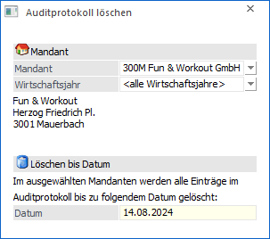
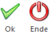

Im Menüpunkt…
1 Audit
1 Auditprotokoll löschen
… kann das im Mandanten gespeicherte Daten-Audit selektiv gelöscht werden.

Je nachdem, welche und wie viele Variablen auditiert werden (siehe Menüpunkt "Audit - Variablen Audit"), wird die verwendete Datenmenge bei jedem Arbeiten mit der WinLine größer. Damit man diese Daten auch loswerden kann, kann das Daten-Audit-Protokoll selektiv gelöscht werden.
Ø Mandant
An dieser Stelle kann ausgewählten werden, für welchen Mandanten das Audit gelöscht werden soll.
Ø Wirtschaftsjahr
Aus der Auswahlbox kann das Jahr gewählt werden, für welches das Auditprotokoll gelöscht werden soll. Standardmäßig wird hier die Option "<alle Wirtschaftsjahre>" vorgeschlagen, wobei auch die Anwahl eines einzelnen Wirtschaftsjahres möglich ist.
Ø Datum
In dem Feld "Datum" kann das Datum eingegeben werden, bis zu welchem das Daten-Audit gelöscht werden soll.
Buttons

Ø Ok
Durch Anwahl des Buttons "Ok" bzw. der Taste F5 werden die entsprechenden Daten-Audit-Einträge gelöscht.
Hinweis
Es empfiehlt sich, vor dem Löschen einen Ausdruck des Protokolls (Programm WinLine START, Menüpunkt "Optionen - Auditprotokoll Daten") durchzuführen.
Ø Ende
Durch Anwahl des Buttons "Hilfe" bzw. der Taste ESC wird das Fenster geschlossen.